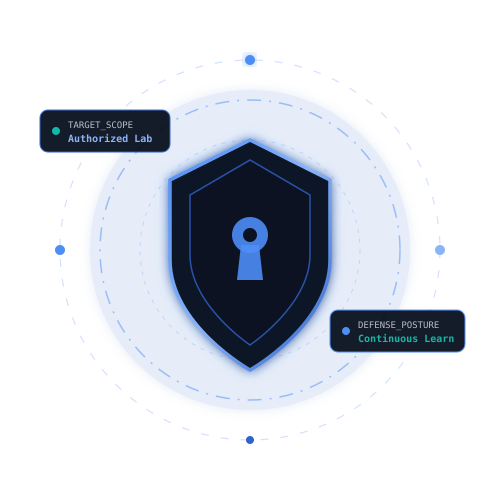

Beatrice Mwende
Aspiring Penetration Tester | Cybersecurity Student | Security Research Enthusiast
Breaking down how systems work. Discovering where they fail. Helping make them more secure.

- Degree
- BSc Computer Security and Forensics
- University
- Meru University of Science and Technology
- Location
- Meru, Kenya
- Open to
- Cybersecurity internships and junior security roles
About
I'm a cybersecurity enthusiast and aspiring penetration tester with a strong interest in understanding how systems operate, uncovering security weaknesses, and developing effective strategies to protect them.
Driven by curiosity and a hands-on approach to learning, I continuously sharpen my skills through Capture The Flag (CTF) challenges, penetration testing labs, vulnerability assessments, and practical security projects. I enjoy exploring emerging threats, mastering security tools, and turning technical challenges into opportunities for growth.
My goal is to contribute to building resilient digital environments by combining offensive security knowledge with a defensive mindset. I am committed to continuous learning, ethical security practices, and delivering meaningful value to organizations through proactive security testing and risk reduction.
Ethics and scope. All testing referenced on this site was performed in authorized lab environments, isolated virtual machines, or sanctioned training platforms.
Technical Skills
-
Penetration Testing & Vulnerability Assessment
Hands-on experience with reconnaissance, vulnerability identification, web security testing, and security assessment techniques.
- Nmap
- Burp Suite
- Metasploit
- Gobuster
-
Network Security & Analysis
Understanding of network protocols, traffic analysis, network enumeration, and identifying network security weaknesses.
- Wireshark
- Nmap
- tcpdump
- Cisco Packet Tracer
-
Programming & Development
Experience with programming fundamentals, application development, scripting, and secure coding concepts.
- Python
- Java
- C++
- HTML/CSS
-
Digital Forensics & Security Fundamentals
Knowledge of digital investigations, security principles, data protection, and incident response fundamentals.
- Evidence handling
- Packet analysis
- Data protection
- Incident response
-
Security Labs & CTFs
Practical experience through Hack The Box, TryHackMe, PortSwigger Web Security Academy, and personal security labs.
- Hack The Box
- TryHackMe
- PortSwigger Web Security Academy
- Personal security labs
Featured Projects
Projects completed during coursework, CTFs, and independent study.
Security Labs & Technical Writeups
Lab writeups and research notes, published on Medium when a lab is complete.
Local Lab Reports
Certifications & Professional Development
Certifications completed in ethical hacking, data protection, and industrial cybersecurity.
My Resume
One page covering education, lab work, projects, and the tools I use.
assets/cv-placeholder.pdf
Placeholder document. Replace
assets/cv-placeholder.pdf with your CV.
Let's Connect
Open to internship and entry-level security conversations.